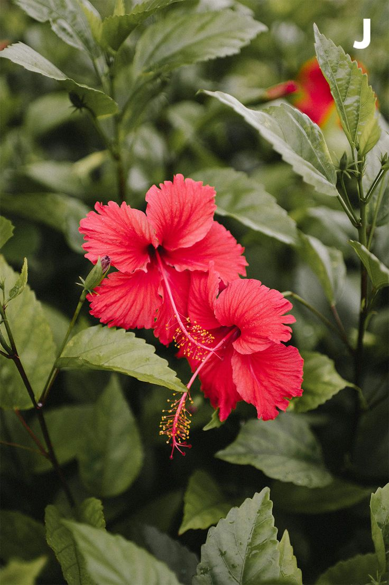
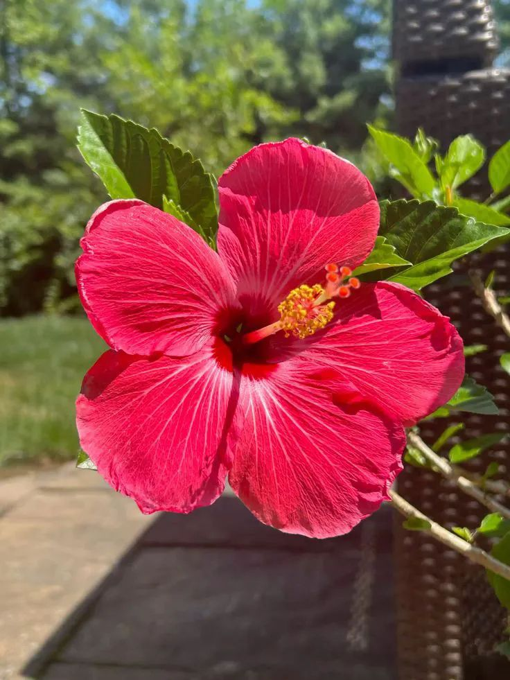
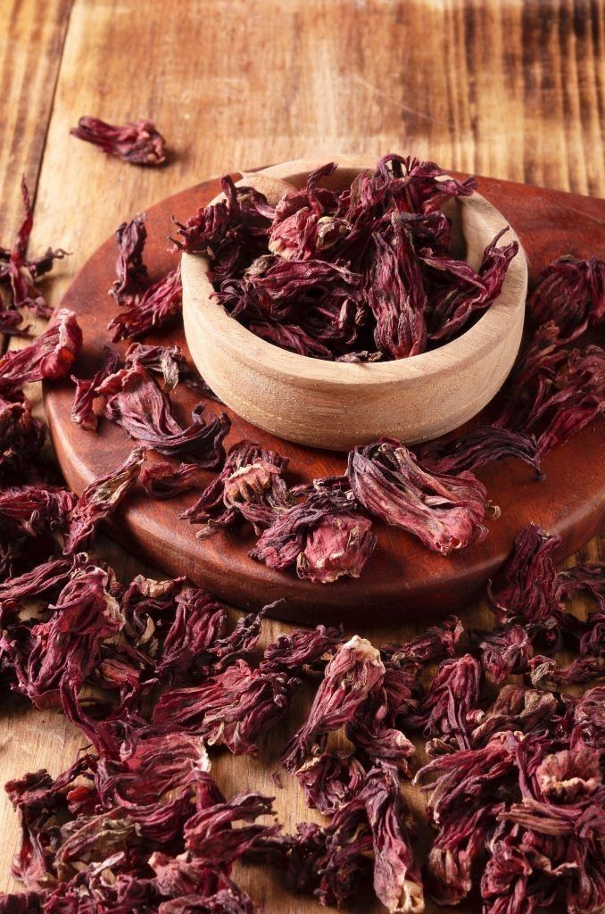
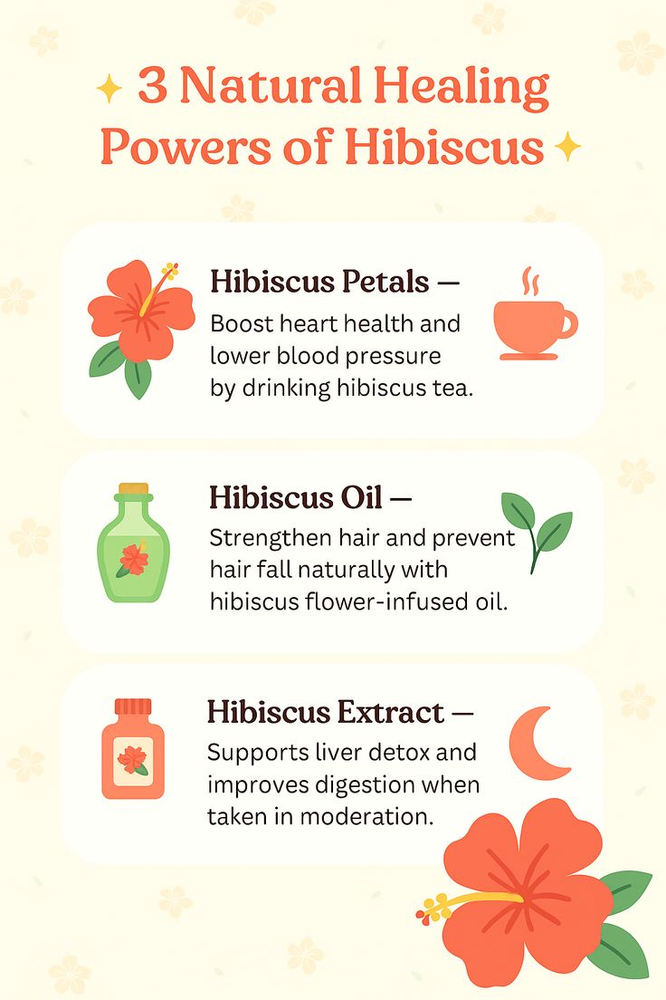
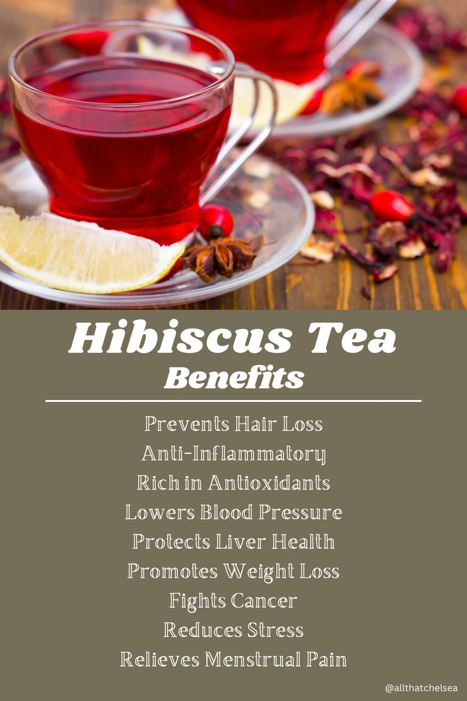
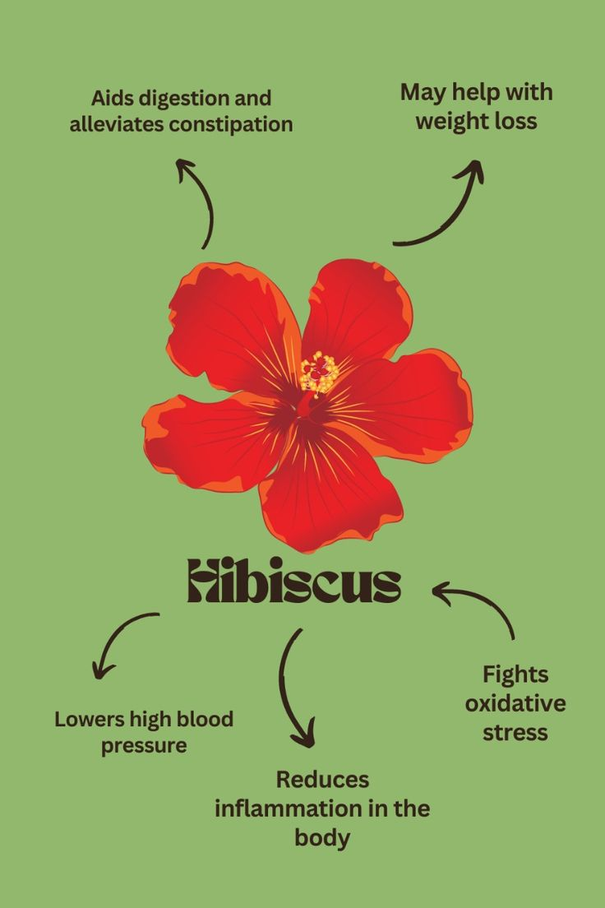
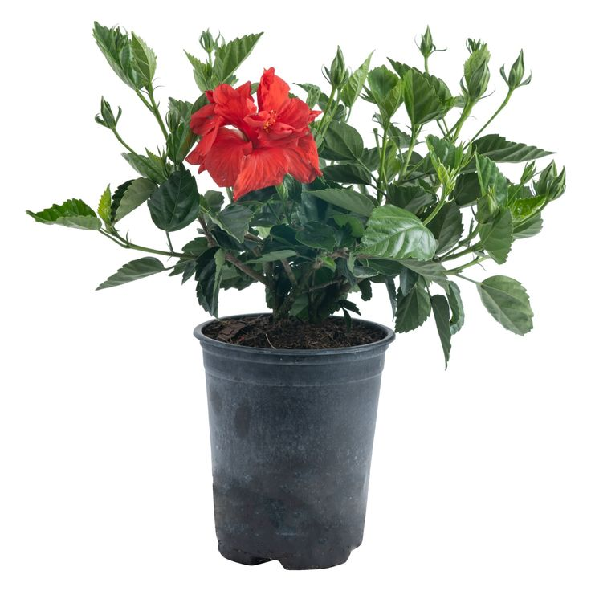

Hibiscus (Shoe Flower)


General Information
Scientific Name: Hibiscus rosa-sinensis
Family: Malvaceae
Type: Evergreen shrub or small tree
Height: 4 to 10 feet tall depending on conditions
Uses of Hibiscus:
- Ornamental: Popular in gardens and landscapes for its large, colorful blooms.
- Cosmetic: Used in hair oils and shampoos for conditioning and growth.
- Culinary: Some species used to make tea and beverages (e.g., Hibiscus sabdariffa).
Medicinal & Traditional Uses:
- Used in Ayurveda for treating hair loss and dandruff.
- Flower extracts are used to control blood pressure and cholesterol.
- Hibiscus tea is known for its antioxidant and digestive benefits.
- Warning: Avoid overconsumption of hibiscus tea during pregnancy without medical advice.




Description
Hibiscus is a tropical plant known for its large, trumpet-shaped flowers in vibrant colors like red, pink, yellow, and white. The blooms are attractive to pollinators and usually last for one day but bloom continuously in warm seasons.
Habitat & Growth
- Native Regions: Asia and Pacific Islands
- Soil: Fertile, well-draining soil rich in organic matter
- Sun: Thrives in full sunlight
- Watering: Regular watering; prefers moist but not soggy soil

Propagation
Hibiscus is propagated through stem cuttings or air layering. Cuttings root easily in moist soil or water. It can also be grown from seeds, though hybrids may not come true.
Fun Facts & Cultural Significance
- Hibiscus is the national flower of Malaysia and South Korea.
- In Hindu culture, red hibiscus is offered to Goddess Kali and Lord Ganesha.
- Used in traditional Chinese medicine for treating various ailments.
- In some cultures, it's known as the "shoe flower" because of its use in shoe polishing.